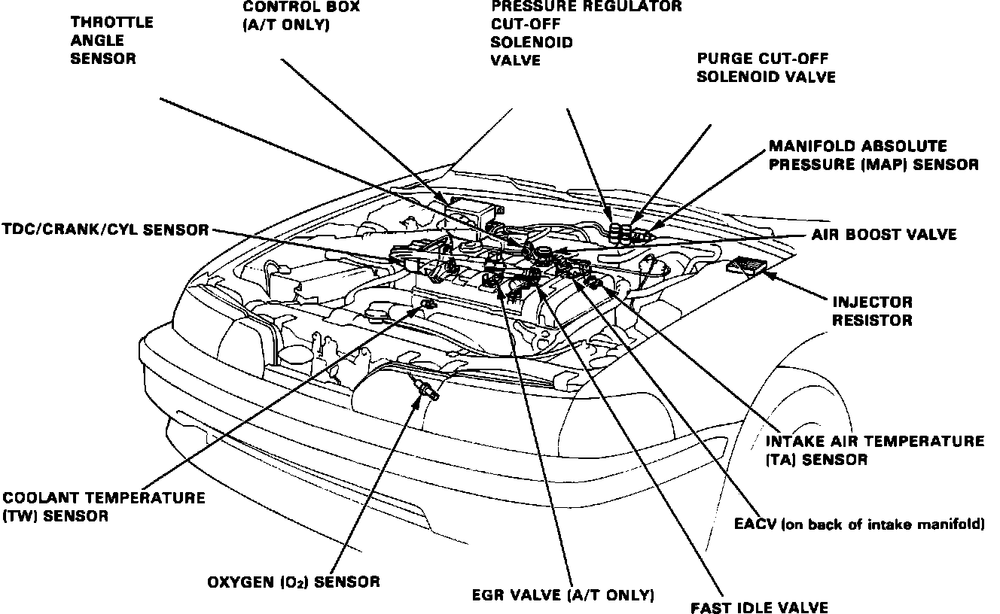

Operation CHARM
: Car repair manuals for everyone.
Home
>>
Acura
>>
1992
>>
Integra L4-1834cc 1.8L DOHC FI
>>
Repair and Diagnosis
>>
Sensors and Switches
>>
Sensors and Switches - Powertrain Management
>>
Sensors and Switches - Ignition System
>>
Crankshaft Position Sensor
>>
Locations
Crankshaft Position Sensor: Locations
Fig. 5 Engine Compartment Components:
